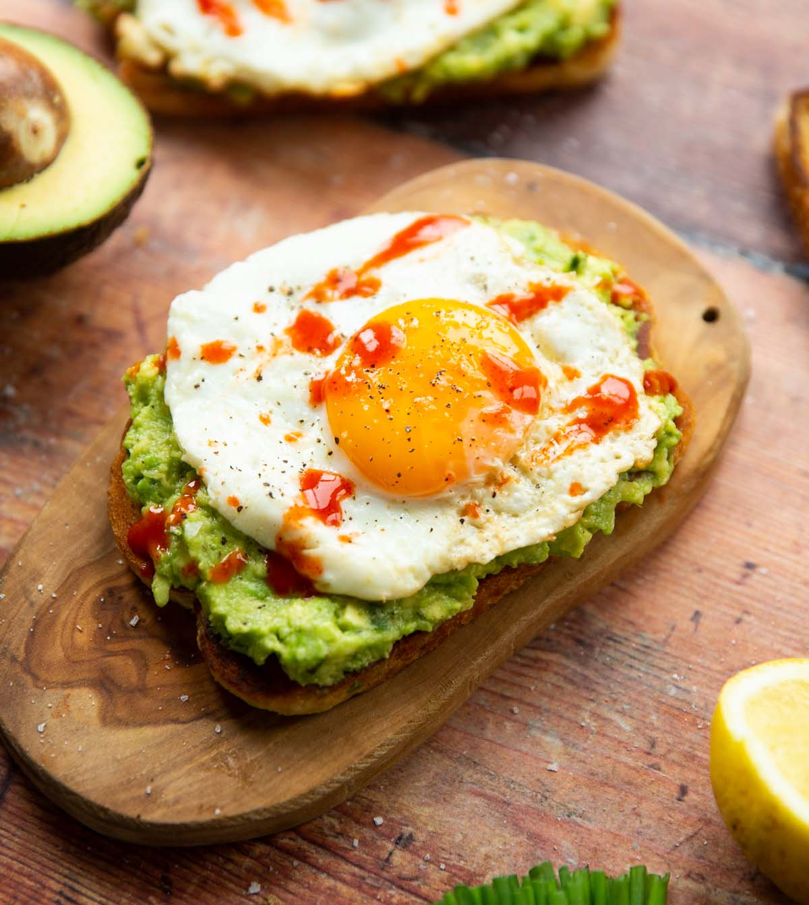

Back to Main Page
Avocado Toast

How to Make Avocado Toast
- Grab two pieces of your preferred bread
- Butter both sides of said pieces of bread
- Toast both sides of bread in a pan until golden and firm
- Remove the pit from your avocado, and then use a big spoon to scoop the flesh
- Put the flesh into a bowl and mash it up with a fork until your preferred consistency
- Mix in a pinch of salt
- Spread avocado on top of your toast
- OPTIONAL: Scramble some eggs and bacon and layer both on top of the avocado
- Enjoy!